Med
Lavanda, vrijesak, planika i još mnogo sezonskih vrsta.
Sve što ovde vidite nastaje polako, pažljivo i ručno — bez fabrike i bez žurbe. Med, lavanda, maslinovo ulje, domaći likeri i vino… i ona mala posluženja koja upotpune trenutak: sušene smokve i ušećereni bademi.
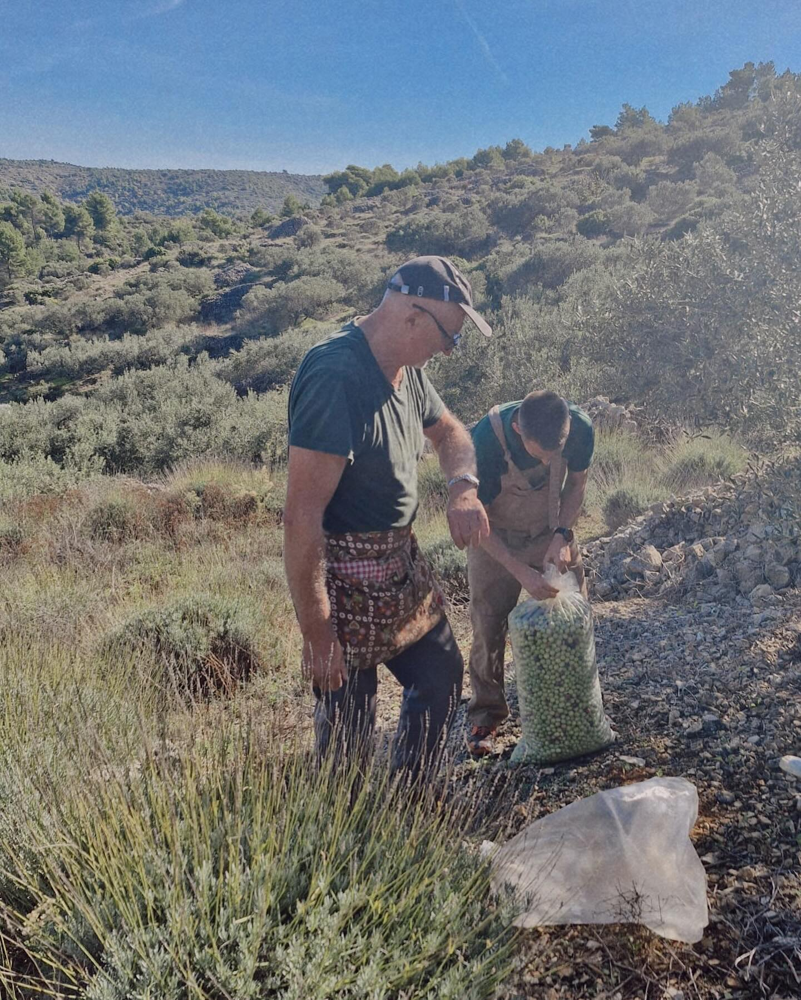
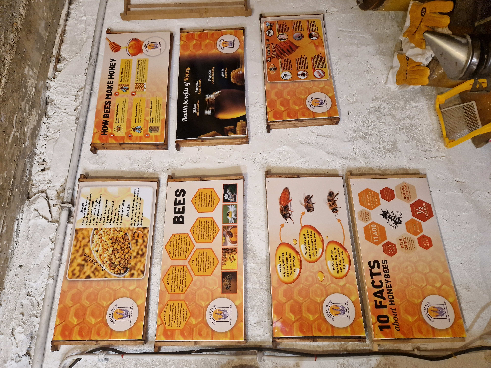
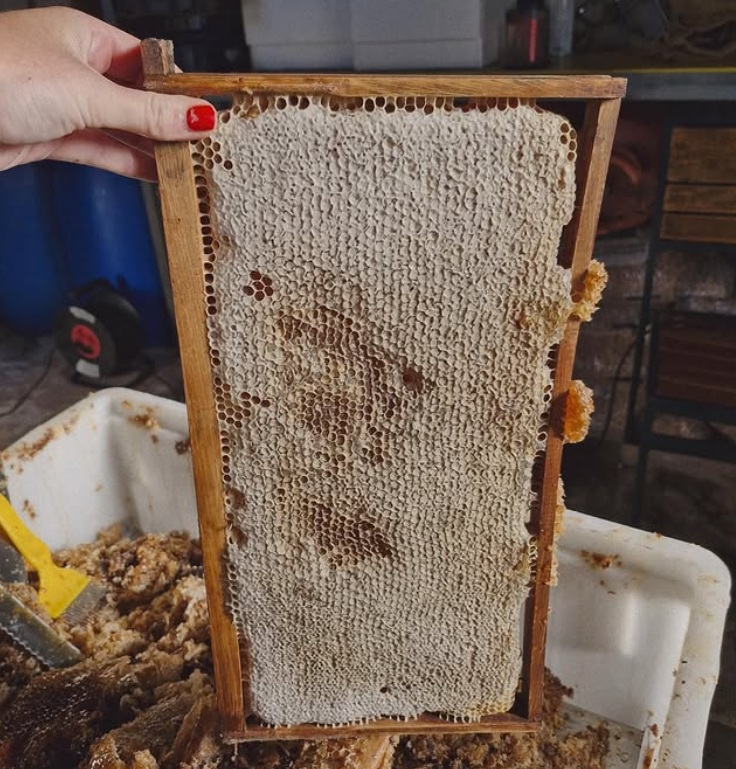
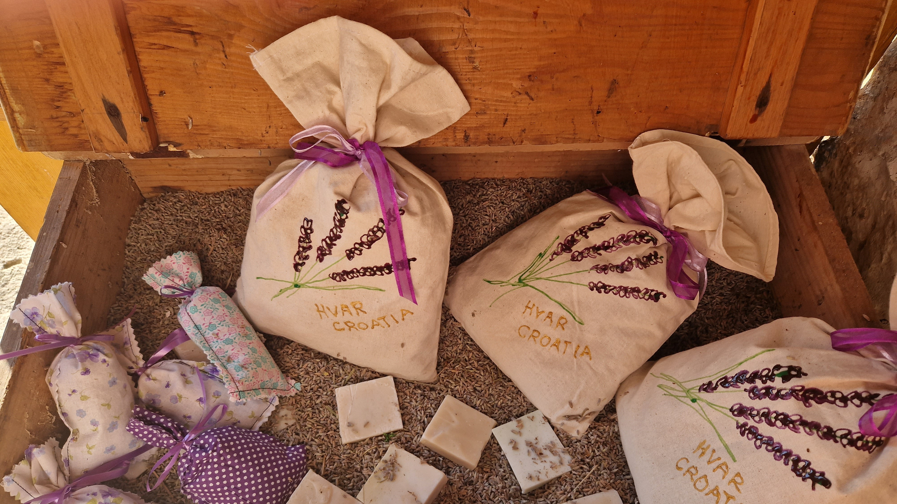
Proizvodi se menjaju kroz sezonu, ali jedno ostaje isto: ručni rad, prirodni sastojci i autentični ukus ostrva.
Lavanda, vrijesak, planika i još mnogo sezonskih vrsta.
Extra devičansko, devičansko, hladno ceđeno + ulje sa limunom.
Ulje, sušene kesice, sapun od lavande i poklon pakovanja.
Lokalno, pitko, savršeno uz degustaciju i letnje večeri.
Medica, mirta, rogač, travarica — sve domaće, ručno rađeno.
Sušene smokve, ušećereni bademi, kandirani citrusi.
Med nije “samo sladak”. Kod nas svaki med ima priču o biljci, sezoni i mestu. Pčele prate cvetanje, a med dobija svoj naziv tek kada prođe stručnu analizu (da se potvrdi poreklo i dominantna biljka).
Lavanda • vrijesak • planika • kadulja • ruzmarin… (zavisno od sezone). Zato degustacija nikad nije ista — svaki put je posebna.
Saće je ono što gosti najčešće pamte: čisti miris košnice, tekstura i osećaj da probaju nešto “baš kako jeste”. Uz to, tu je i polen (cvetni prah), prirodan i snažan dodatak ishrani.
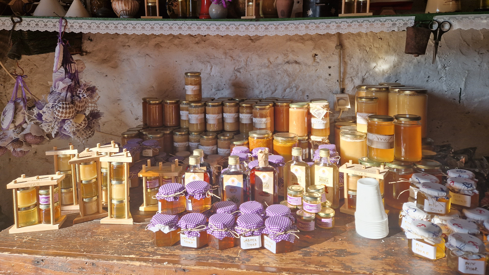
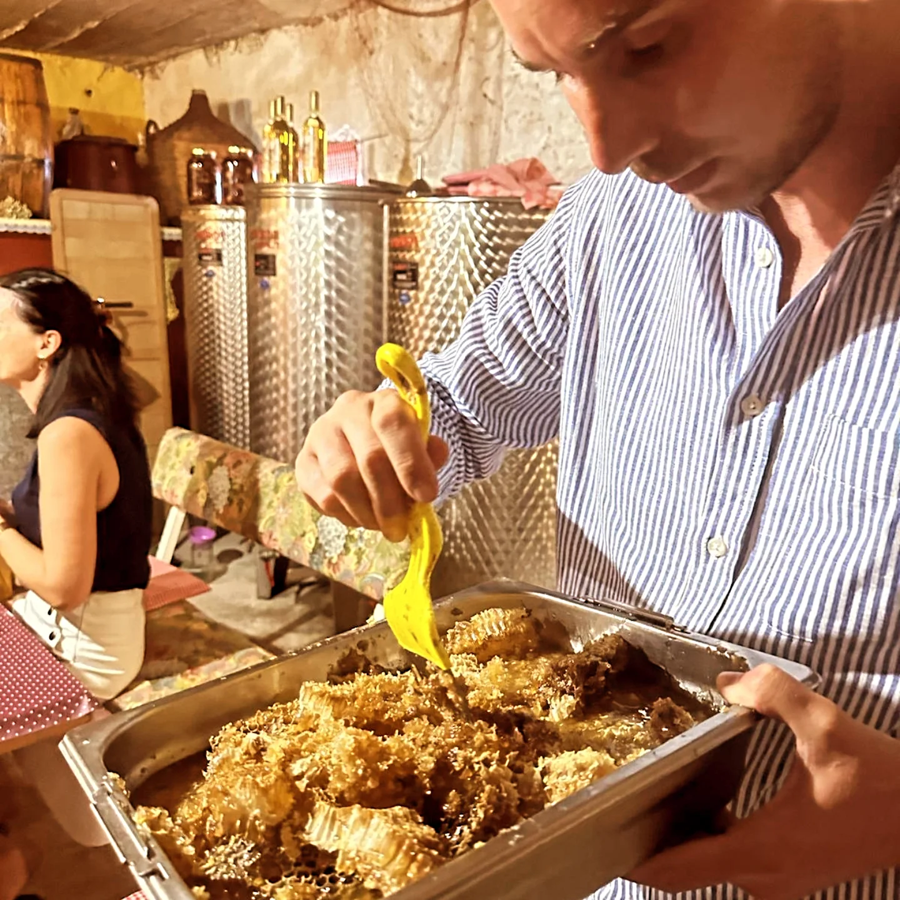

Masline se beru ručno, a ulje se čuva kao zlato. U našem kraju često se razlikuju i “nekad” i “sad”: ranije se ulje koristilo i nakon više meseci, dok se danas sve više ceni sveže, mirisno, hladno ceđeno ulje.
Extra devičansko maslinovo ulje je najviša kategorija:
dobija se mehanički (bez hemije), ima najnižu kiselost i najčistiji ukus i miris.
Devičansko maslinovo ulje je takođe dobijeno mehanički,
ali može imati nešto višu kiselost i blaži profil — i dalje je kvalitetno,
samo korak ispod “extra” nivoa.
“Hladno ceđeno” znači da se ulje dobija pri nižim temperaturama, kako bi se sačuvali mirisi, ukus i korisne materije. To je razlog zašto hladno ceđeno ulje često ima življi, “zeleniji” karakter.
Imamo i maslinovo ulje sa limunom — idealno za ribu, salate i lagana letnja jela. Miris je čist, a ukus svež, kao Hvar u zalogaju.
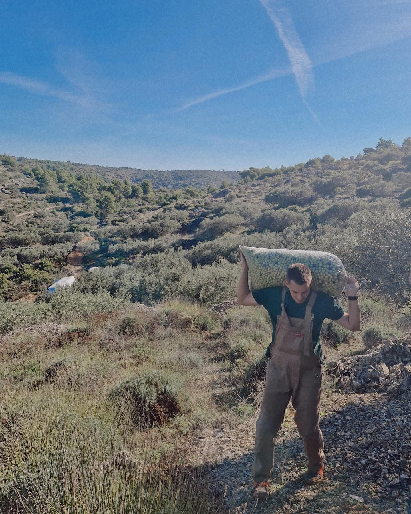
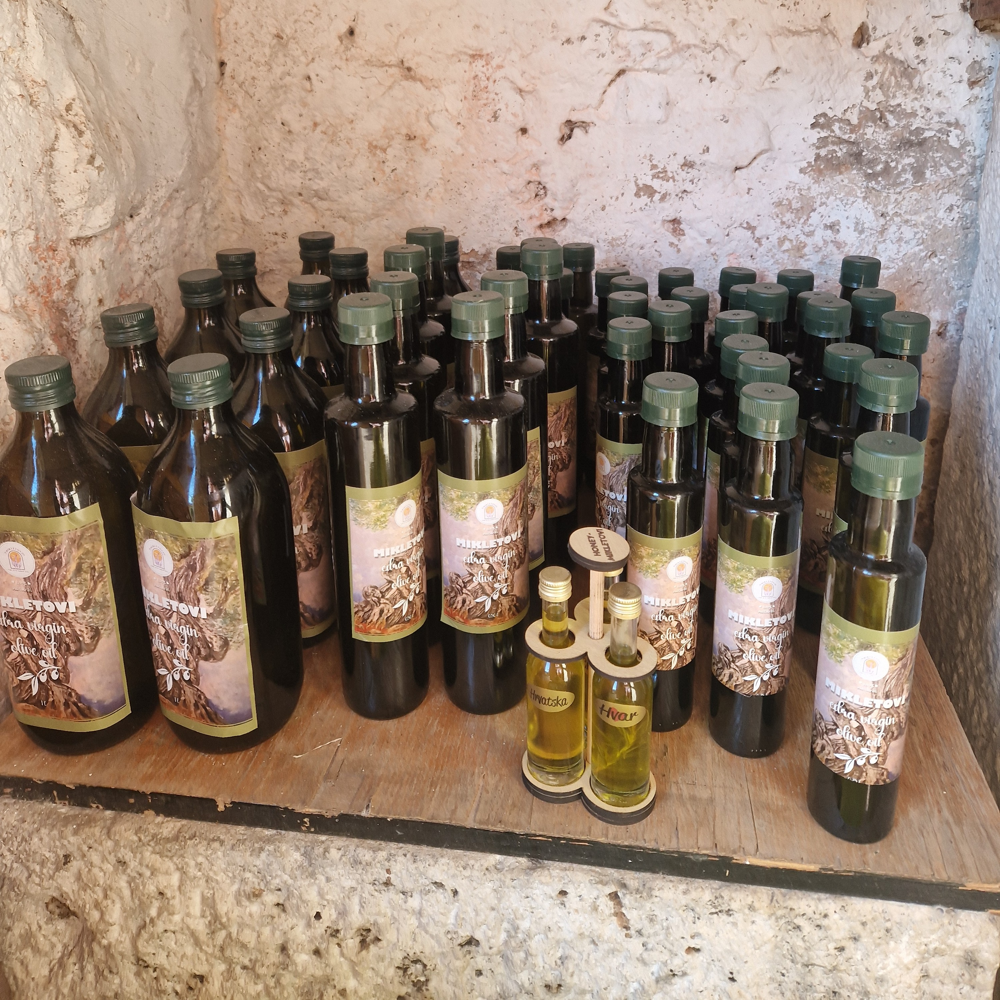

Lavanda je simbol Hvara, ali malo ko zna koliko je ručnog rada iza tog mirisa. Polja su neravna, zato se lavanda bere ručno — srpom, uz suhozide i kamen. Destilacija ulja je poseban ritual, a gosti najčešće ostanu očarani tim “sporim” procesom.
Eterično ulje • sapun od lavande • sušene kesice lavande • sušeni cvet u poklon pakovanjima. Sve miriše nežno i prirodno — bez agresivnih veštačkih mirisa.
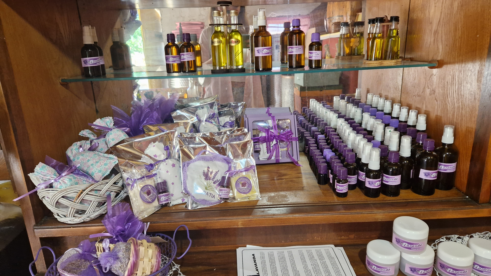
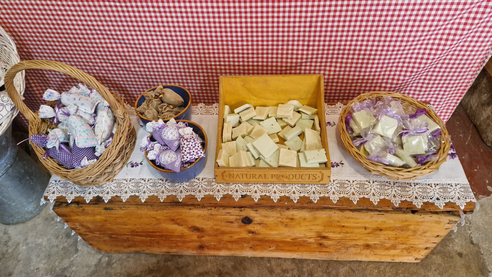
Uz degustaciju ide i čaša lokalnog belog vina — lagano, osvežavajuće, stvoreno za letnje dane. A za one koji vole jači “potpis” ostrva, tu su domaći likeri i rakije.
Lokalno, pitko, idealno uz maslinovo ulje i med.
Liker od meda — topao, aromatičan, domaći.
Duboke mediteranske arome koje se pamte.
Biljke ostrva u jednoj čašici — ručno pripremano.
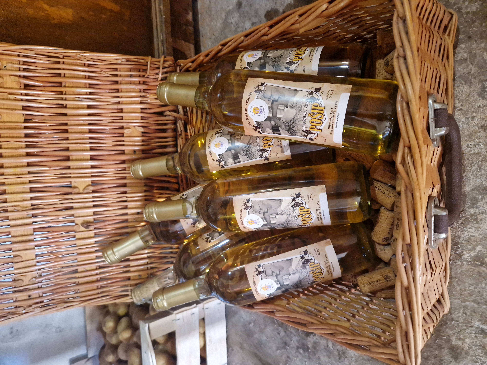
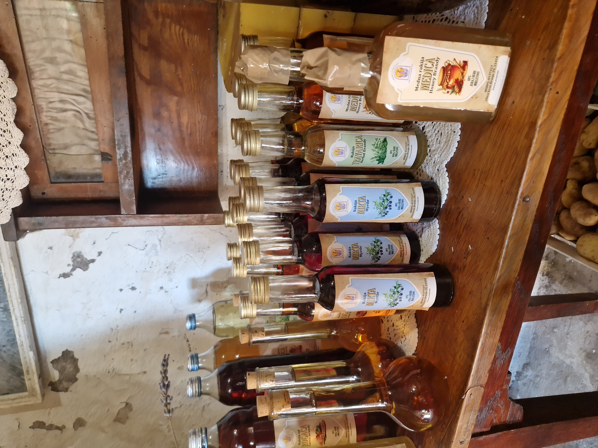
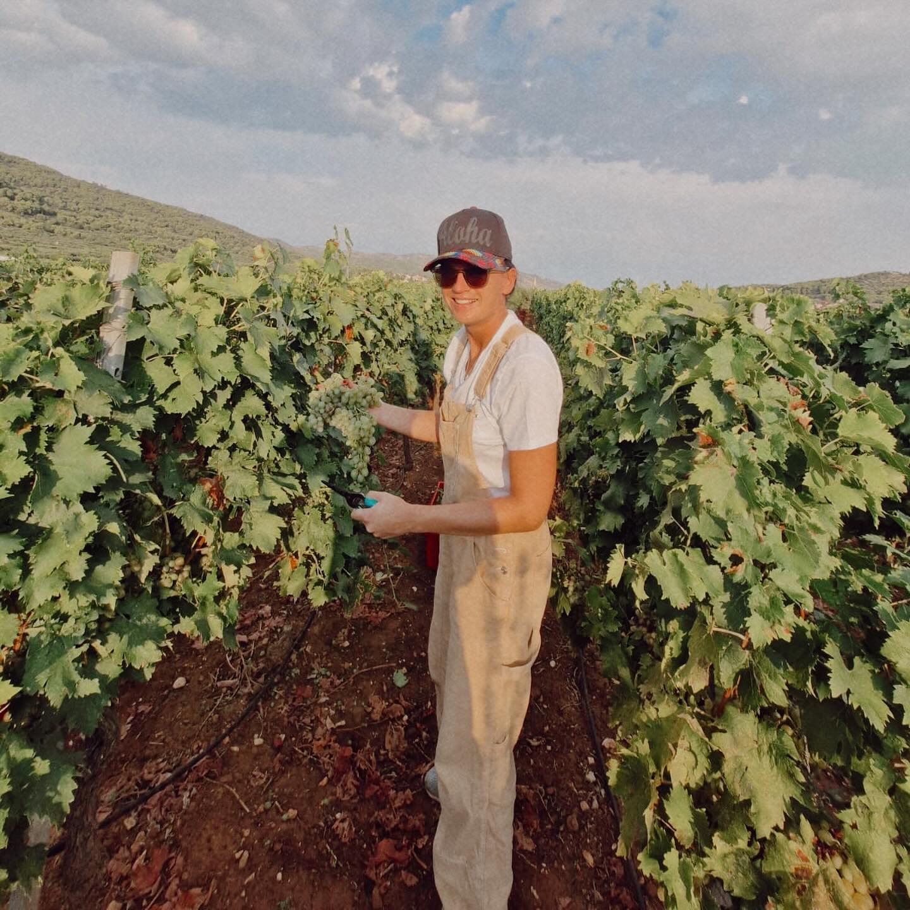
Nije sve u “velikim proizvodima”. Nekad baš sitnice ostanu u sećanju: domaće sušene smokve, ušećereni bademi, kandirani citrusi… To je ona toplina doma koja zaokruži degustaciju.
Domaće, prirodno sušene, savršen par uz liker i med.
Hrskavo, slatko, mirisno — kao mali festival ukusa.
Poklon pakovanja koja gosti rado nose kući — miris Hvara u torbi.
Na turi ne gledate proizvode kroz izlog — vi ih doživite, pomirišete i probate.